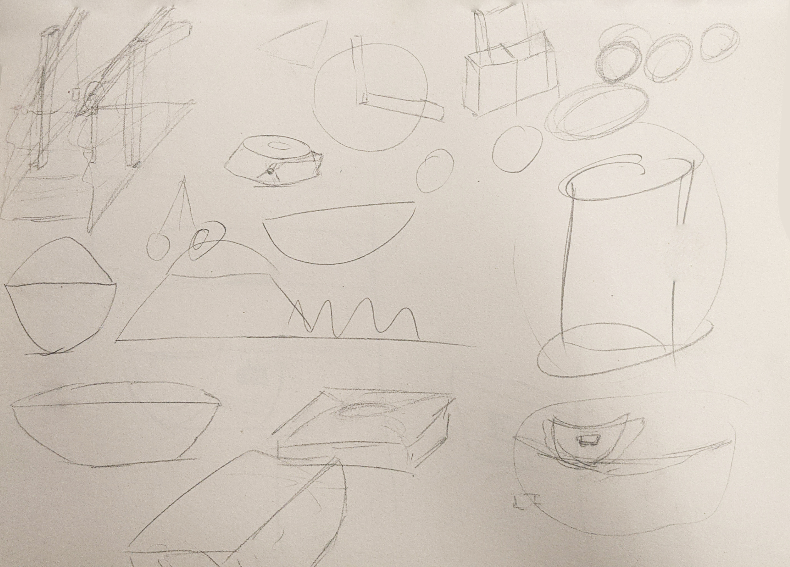
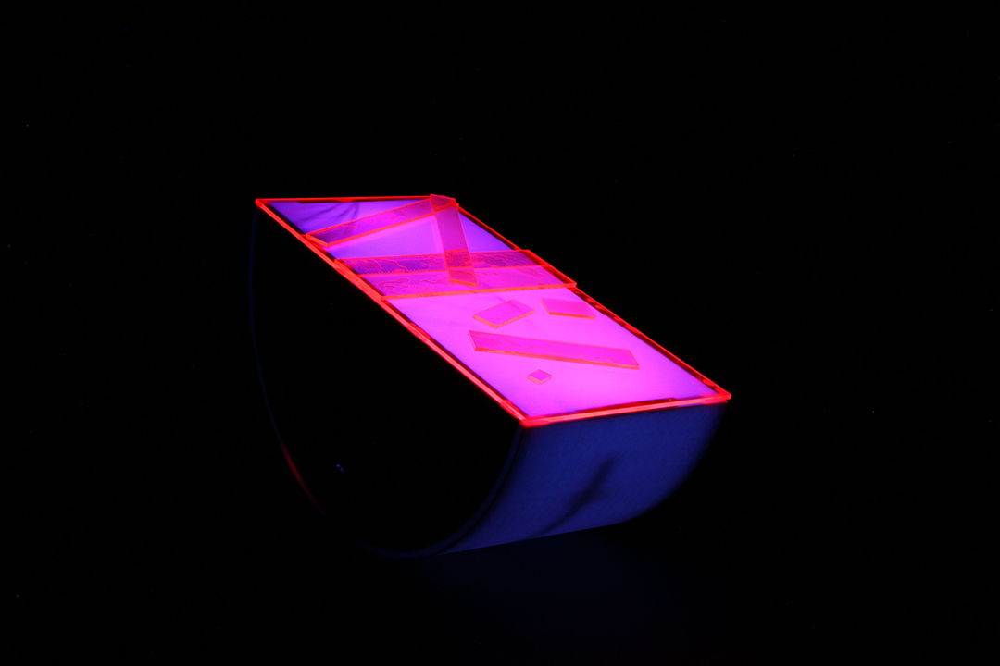

-
Melontime
-
1 month
-
team of 2
-
assignment
Process
Sketchful beginnings /1
In the Material and Design course at SIAT, we had to create a functioning home object while taking design concepts from an existing design firm in a team of two. This home object had to either explore an aspect of conceptual time, a lighting experience or an audio product. For this project, I was in charge of the design aspect of the physical product while my partner had worked on the internal mechanics. Melontime, is a conceptual timepiece for the home that works as a 30 second timer by rocking back and forth with visual light cues that signify the user of what it is currently doing. We started the project with sketching out the idea, ideating what we could do.
We generally found what we wanted to do, creating a house piece that conceptually tells time by being a 30 second timer. This timer would rock back and forth until the duration is over. In this sketch we have a half-cylinder type object which would be the starting point and first sketch of melontime.

Form takes shape /2
The first problem was iterating on the shape. The curvature of the sides affected the overall feel of the object. A steep curve would make it easier to rock but harder to balance while a shallow curve would be harder to rock but easier to balance. To figure this out we had made several different mock-ups made out of MDF lasercut pieces. This material allowed us to iterate and test with ease as it is very quick to produce. We decided to choose a more equal curvature as it rocked the best.
Along with the shape we also had to decide what material would be best for the bottom round part that melontime would rock on. We tested these different patterns into lasercut MDF to test the durability and smoothness that each would offer.
We eventually strayed from these choices as we knew that this material is not what we wanted our piece to communicate. The problem with this material, even if we were to coat it with veneer is that it would have felt cheap to the user. The color of the material was also quite dull and not in the image that we had decided for melontime. Although the positives of this material was how interesting the material would bend depending on the different patterns that were cut into it. This exploration of materials however lead to us deciding to 3D-print the rounded bottom.

Tilting of time /3
While we were still tinkering on the shape and materials, my teammate Jimmy had begun designing a way of rocking Melontime with the internal mechanisms. We decided to use arduino, however with
this
we had the question of how we would like to power Melontime. We were conflicted on whether having a directly wired connection to an outlet or if we could use a battery. I decided that we could disassemble a power bank and use that
battery as a rechargeable battery. These rechargeable ion batteries are also quite heavy which gave me the idea that we could also use the power source as the counterweight to melontime. After we decided on this, Jimmy had created an
arduino program that had detected how tilted the board is, moving the servo motor to a certain degree to counter-weight the tilt. He also programmed this to be set to a timer, completing most of the internals of Melontime.
The only internals left were the LED strip lights to be added, which we had wanted to change color with a button press, creating a beautiful light effect through the clear acrylic that would be on the top of Melontime. The LED strips
would change color according to how long the button press, also functioning as a power button or to switch to standby mode, disabling the tilt-feature, turning Melontime into a stable lamp. With these in mind we had to design a type
of button we wanted that would complement the rest of the design as well as where to put the micro-USB port for charging the ion battery.


Assembling awesomeness /4
Once the shape was determined, I decided on the materials. The rounded sides were made of 3D printed PLA Plastic, as it’s a robust material while offering us a smooth texture. We had cut them in half as the 3D printers we had access to were not big enough to house the entirety of the piece, and so we had to join the two in the middle. The two remaining sides are made of cherry wood, as the hardwood made it fit in within a homespace. The top was an abstract layout of three different acrylic plastics, which were bright enough to glow by themselves. Beneath the acrylic was a thin piece of opaque plastic which diffused the light from inside when Melontime was switched on.
To cut the sides out of cherry-wood we had to 3D model the piece we wanted to be CAD cut printed into our desired shape. After it was cut we also treated the cherry wood by sanding it and using a wax to treat the wood. This gave melontime the glossy and smooth wooden sides that communicate the joy of melontime.
Reflection
Melontime /5
The conclusion was a success! Resulting in an A in the course and on Melontime. The materials had evoked happiness to the viewer and introduced color into the home. This affected how I choose materials and textures from now on. The importance of the materials and textures affect the function and meaning of the product, the feeling that the users get from the product as well.